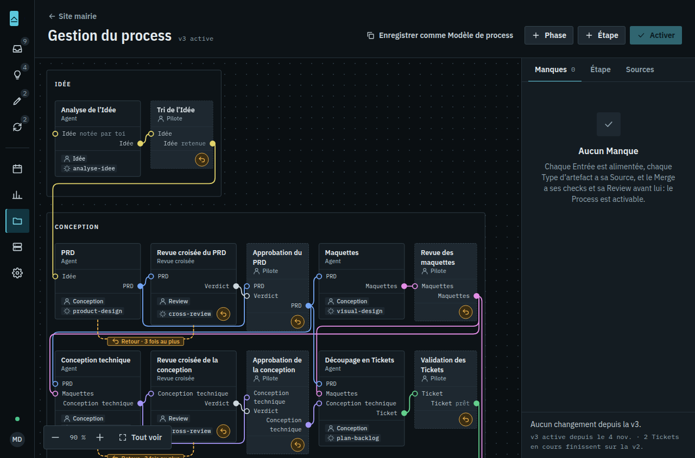

Pilotage de projets · Agents IA
Crewdeck
Piloter ses projets avec des agents IA, de l’idée au ticket livré. Une interface personnalisable, du tableau de bord sobre à l’open space isométrique.
Explorer le projet
Le dépôt réunit une application web, un serveur et un Runner en Go. Des contrats partagés en Zod relient les différentes parties du projet.